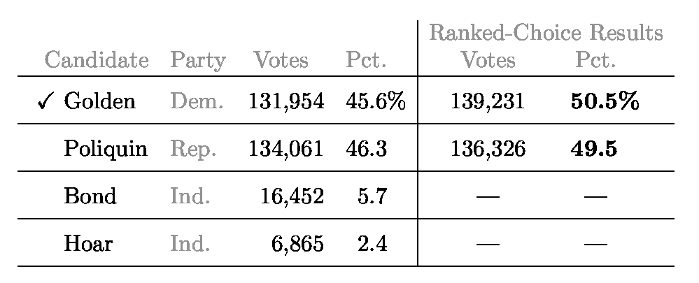
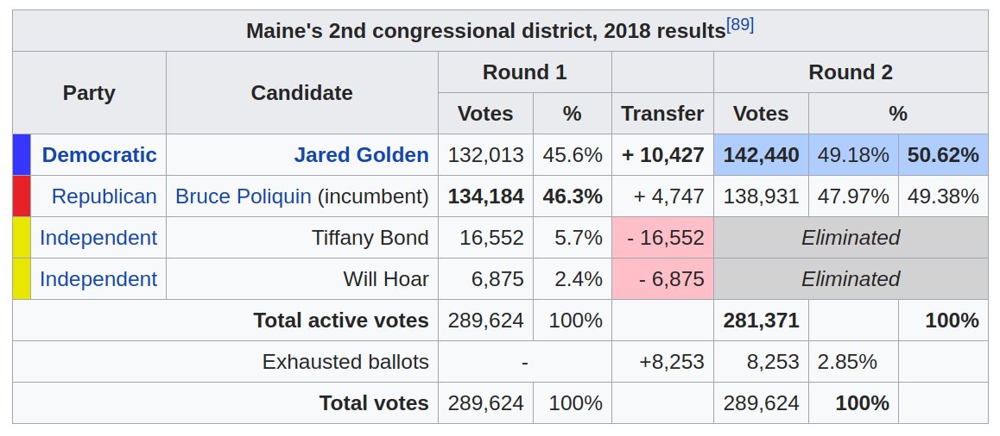
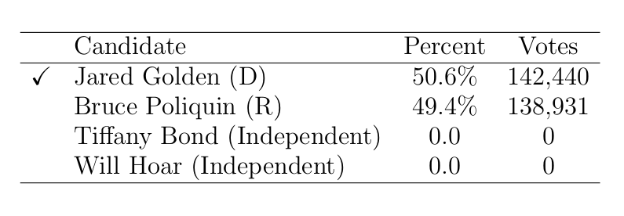
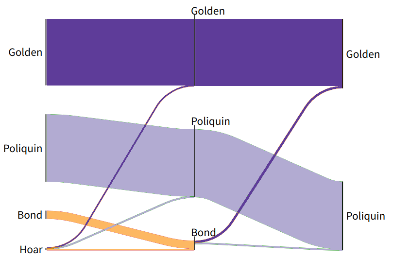

Accumulation charts for Ranked-Choice (Instant-Runoff) Voting
This page is an introduction to ideas explained in our (Bridget Tenner and Greg Warrington) preprint.
An accumulation chart is a graphic for displaying the results of an election held under ranked-choice/instant-runoff voting. (We'll use "ranked-choice" and "instant-runoff" interchangeably on this page.) The goals of this page are two-fold:
- To explain how to read an accumulation chart.
- To convince you that several common approaches to illustrating the results of ranked-choice voting elections are un-illuminating and/or misleading.
Below are accumulation charts for several historical elections. For instance, the default election shown is the November, 2018 election for Maine's 2nd congressional district. Depending on the browser you're using, you should be able to hover to get tooltips and/or zoom the below chart.
An accumulation chart is a bar chart with one bar for each candidate. The top candidate is listed first. The remaining candidates are listed in reverse order of elimination. The length of each bar corresponds to the maximum number of votes each candidate gets.
Tick marks separate votes accumulated during different rounds. Rounds are ordered from right to left. The vertical coloring within each bar encodes the rankings listed on various batches of ballots.
Ranked-choice voting is a popular election system used around the world. It has recently gained a national profile as it was used to elect a number of Maine statewide races in 2018, including the closely contested election for Maine's 2nd congressional district.
Ranked-choice voting depends on the ability of voters to rank multiple candidates for a single office. This allows voters to express more nuanced preferences than is possible in the typical plurality election system used in the United States. It is crucial to remember that voters will frequently vote differently under a ranked-choice voting system than they would under a plurality system.
Once voters have cast their ballots, the results must be tallied to determine a winner. There are many possibilities of tallying algorithms. What we describe here is the instant-runoff tallying process, which often gets referred to as ranked-choice voting.
The algorithm proceeds in rounds. At the end of each round, one candidate is eliminated. The algorithm stops when there are only two candidates remaining.
To determine who gets eliminated in a round, the ballots are sorted into piles according to the highest-ranked candidate not yet eliminated. For example, in the Maine election shown in the default accumulation chart, there are four candidates: Hoar's pile has 6,875 votes, Bond's has 16,552, Poliquin's has 134,184 votes and Golden's has 132,013 votes. Try hovering over the rightmost portions of each bar in the chart. If everything is working, you'll see tooltips displaying these values for each candidate. At this point in the tallying process, the only thing that has been looked at on each ballot is the name of the candidate ranked first.
Since Hoar has the fewest votes at this point, the ranked-choice algorithm specifies that Hoar is eliminated at the end of Round 1. Each of the 6,875 ballots in Hoar's pile are redistributed to the second-ranked candidates. It turns out that 2,621 of the voters prefer Bond among the remaining three candidates, 889 prefer Poliquin, and 1,203 prefer Golden. If you're keeping track, you'll note that these only add up to 4,713 votes. The remaining 2,162 did not indicate a valid second-choice candidate and get set aside. Again, if hovering over the chart works, you'll see these numbers displayed over the portions just to the left of the Round-1 portions of each bar. (This might be a good time to zoom into the chart.)
The process continues in this manner until there are only two candidates remaining. The candidate with the most votes at this point is declared the winner.
If you followed the explanation appearing in the above discription of the ranked-choice algorithm then you already know most of it. The candidates are sorted in reverse order of elimination, with the candidate who gets eliminated in the first round on the bottom and the ultimate winner on the top. The length of each bar indicates the total number of votes garnered by each candidate up to the round in which they are eliminated (or declared the winner).
Because candidates accumulate votes during different rounds, the bars are subdivided into horizontal segments. The rightmost segment corresponds to the votes declaring a given candidate as overall favorite. The next segment to the left includes votes for which that candidate is the favorite after one candidate has been eliminated, and so on. The boundaries between adjacent segments are indicated by the tick marks on the top side of each bar.
The last feature of accumulation charts to introduce is the coloring scheme for each bar. This coloring is based on the fact that each candidate is represented by a color. You can determine the color just by looking at the rightmost portions of each bar or the color each candidate's name is displayed in. So, for example, Bond is represented by light green in the Maine election.
Now imagine each bar as a view of the ballots arranged on a bookshelf. Each ballot is colored from top to bottom according to the colors of the high-ranked candidates. For example, the portion of Bond's bar that is dark green on top and light green on the bottom corresponds to votes in which Hoar was the top-ranked candidate and Bond was the second-ranked candidate. The lower-ranked candidates are not displayed. After Bond gets eliminated, some of these votes will go to Poliquin and some to Golden. For example, the portion of Golden's that is the second from the left indicates that 1,362 voters preferred Hoar as their first choice, Bond as their second choice, and Golden as their third choice, as indicated by the portion of the bar with dark green (Hoar) on top, followed by light green (Bond) in the middle, and dark blue (Golden) on the bottom. The leftmost portion of Golden's bar, with light green on top, corresponds to 3,027 ballots that were never allocated to Hoar since Hoar (dark green) was eliminated before Bond (light green) was.
Below we highlight some of the ways in which various organizations have chosen to convey the results of ranked-choice voting. We have provided links to sample usages.
Round-1 and Final results.It seems to be relatively common to report only first-round results and final results such as the New York Times did here and as reproduced below: 
This particular depiction has several drawbacks. First, the main part of the table is devoted to the first-round results. The first-round results are definitely important but, at least in elections with more than two competitive candidates, a very limited part of the picture. The entire point of ranked-choice voting is your preferences beyond first choice matter. Depicting the results in this way undercuts that idea.
The results from the final round are
included, but rather than being the focus, they are
put off to the side. Furthermore, they carry the
qualifier that they are the Ranked-Choice
Results
(in comparison, presumably, to the
first-round results that lack any such qualifier).
For a reader unfamiliar with ranked-choice voting, contradictory signals are sent regarding who the winner is. The first-round results indicate Poliquin, but the check-mark and bold-faced percentages indicate Golden.
Finally, a reader who knows and understands ranked-choice voting is not provided with the ballot-level information necessary to understand voters' preferences on anything other than the most superficial level.
Wikipedia presents a similar table to the New York Times one, essentially only showing two of the rounds. Wikipedia does explicitly list the vote transfers. 
Final-round results onlyAnother possibility is to report only the final-round results as Ballotpedia does here (depicted below):
Let's compare this option to the New York Times's approach of supplying both first-round and final-round results. By omitting the first-round results, Ballotpedia has chosen a route that is likely less confusing for those unfamiliar with ranked-choice voting. Unfortunately, there is useful information contained in those first-round totals, and here the viewer is prevented from seeing it.
Another unfortunate feature of this display is that the candidates who do not make it to the final round (Hoar and Bond) are depicted as each failing to garner any portion of the vote whatsoever.
First-round results only
Politico
takes the approach of providing only the first-round
results. Unfortunately, it is then left to
a Winner
column (with no accompanying
explanation) to indicate that Golden was declared the
winner, directly contradicting the listed numbers.

The Washington Post takes a similar approach, although the accompanying text does explain that ranked-choice voting is used to determine the winner.
Sankey diagramsWe are unaware of major media outlets using Sankey diagrams to illustrate the results of ranked-choice elections, although there are various examples scattered around the web (such as here and here), including one for the 2013 Minnesota mayoral race. Below we illustrate a Sankey diagram we constructed for the Maine race for comparison:
Sankey diagrams do an excellent job showing where ballots go during each reallocation step that occurs after someone is eliminated. And they give a qualitative sense of the relative support for each candidate as the tally continues through the various rounds. Unfortunately, given the layout, one is forced to eyeball which of Poliquin or Golden has greater support in the last round. And, although more information is presented (at least qualitatively) about the ballots cast than in the various other depictions we've seen in the media, it is impossible to see, for example, whether there are more Hoar-Bond-Golden votes or more Hoar-Bond-Poliquin votes.
One drawback for Sankey diagrams is that it is unclear how easily interpreted they are for people who haven't seen them before. Of course, the same issue arises for any novel representation, including accumulation charts.
Stacked bar charts These charts are, at least superficially, similar to
accumulation charts: There is a bar for each candidate
indicating that candidate's share of the vote. As
implemented, for
example, here,
the viewer can interactively choose which round to
display. For example, the below shows part of the image
shown for Round 3 of an election:

There are many additional ways to focus on particular aspects of the data encoded by the voters' rankings. Some examples can be found here.
Voters act differently in ranked-choice systems than they do in plurality systems. In general, comparing Round-1 votes can be very misleading. Take, for example, the following election:
| Ranking | Number of ballots |
|---|---|
| A > C | 90 |
| B > C | 100 |
| C > A | 20 |
In Round 1, B has the most first-round votes with 100, A comes in second at 90 and C is a distant third with 20. But everyone who voted for C first prefers A as the second choice, so in Round 2, Candidate wins 110 to 100. The 100 to 90 lead of Candidate B in Round 1 is inconclusive. A natural, common conclusion is that B would've won under a traditional, plurality vote. But the 20 ballots ranking C then A suggest that under a plurality vote many of those voters would've voted for Candidate A to avoid wasting their vote on C. The entire argument for instant-runoff voting is that important information about voter preferences is contained in the lower-ranked preferences. Ignoring that information, as you do when looking only at first-round totals, can lead to very misleading conclusions.
Looking at the first-round votes is like looking at who is leading a one mile race after the first quarter mile. It's undeniably informative, and probably predictive, but in the long run it doesn't determine the winner. The rules of a one-mile race are that the first runner to complete the full mile wins just as the rules of instant-runoff voting dictate that the winner is the candidate who survives to the last round and has the most votes at that point. What the ranked-choice algorithm cares about is who has the fewest votes during each round (and who is therefore eliminated). That's what we've focused on in the accumulation charts.
Interactive accumulation charts for historical elections:
Color ballots by: (descriptions below chart)
Max number of candidates to show: (does not work for multi-winner elections)
Options for how ballots are colored:
- Color ballots by ranking: This is the default option and what is described in all of the material at the top of this web page.
- Color ballots by first choice: With this color scheme, each ballot is permanently colored according to the first-choice preference that appears on it.
- Color ballots only by candidate: With this color scheme, the height of the bar for any given ballot indicates how low of a preference that candidate was. This is similar to the default color scheme, except that the colors for already-eliminated candidates are surpressed. A full-height bar indicates first choice, half-height indicates second choice, third-height indicates third choice, etc.